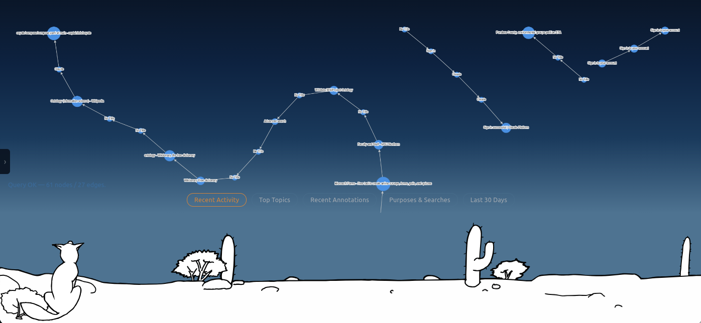
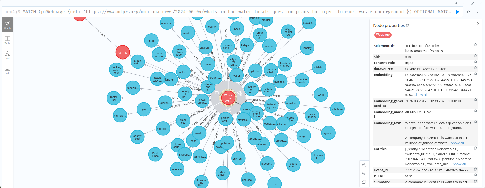
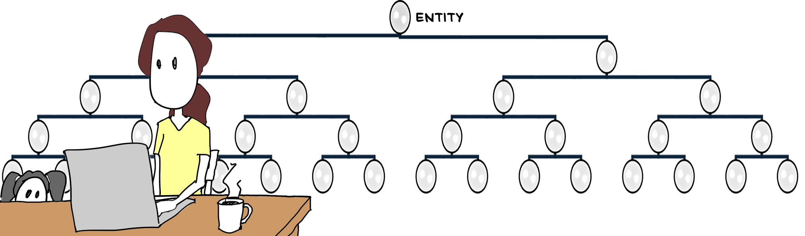

Today, I'm releasing a new version of my open-source project Coyote, and I'm ready to (finally) start blogging about it and developing it in the open.

What is Coyote?
Coyote is a tool for life-wide learning — free, open-source, local-first, and 100% controlled by you.
Coyote is a data record meant to help you understand your own learning — its current state, longitudinal history, and the habits and behaviors that shape your learning — in order to help you plan and continually improve upon your informal learning. It's meant to support you in analyzing the networks through which you learn, and meta-cognitively analyze yourself as a learner. It’s also meant to support experiential learning cycles and self-regulated learning phases. Coyote does all this by gathering semantic data on your personal learning and information behavior in digital networks (the current “MVP” version is limited to just your web browsing), which it uses to create a rich record of your personal informal learning. The animating principle of Coyote is that your life is the curriculum.
Coyote is also a public experiment. The space of informal, self-directed, self-determined learning, and the tools/technologies capable of supporting learning in those spaces, is under-researched see Morris et al. Hence, Coyote is best understood as a platform for testing hypotheses—an experiment, not a solution. Will a continuous record help you understand your own information behavior? Will it help you improve your informal learning? I want to investigate, and I’m hoping to find others as obsessed with these questions as I am. Also, it must be a public experiment because I am a lone designer. I will almost certainly start from assumptions that are unproven, biased, or just plain wrong.
It's also worth mentioning what Coyote is not:
- It's not an AI teacher
- It's not a pre-planned curriculum
- It's not an LLM in a wrapper
- It's not RAG over your browsing history
How does it work?
The following will illustrate how a self-directed learner could use Coyote to make sense of and organize her own life-wide learning and pursue her real-life goals. The persona is invented but the scenario is real.
Chapter 1: An informal learning need arises
Our protagonist is a Montana woman who lives with her family in a poor, rural plains community east of the Rocky Mountains. Several months ago she installed Coyote. One morning, drinking coffee and reading the local news on her laptop, she learns that a bio-fuels company has applied to the Environmental Protection Agency (EPA) to dump industrial wastewater into a decommissioned oil well, which would put wastewater into the local aquifer. The article quotes the bio-fuels company and EPA as claiming that residents (present and presumably future) of her rural county will never need to drink the water from the aquifer that lies beneath them. She reads that there will be a county meeting, open to the public, to discuss the company's application. She decides to attend the meeting. In the meantime, she resolves to "do her own research" to learn more about the issue.
What Coyote is doing in the background
While our protagonist reads, Coyote reads what she reads, what she writes, understands the "meaning" of the text, and creates a semantic data record for her.
Software has been able to track metadata about your browsing history for decades, but old-school software couldn't read webpages and understand what they’re about. Making natural language text on the web understandable to a computer is part of what Coyote does, but it's not the innovation. There's a lot of software nowadays using natural language processing (NLP) to do more or less the same thing. What Coyote does that others don't do (as far as I know) is gather and record data on how you actually engage with what you read — not just that you visited a page, but if the information was meaningful to you. It’ll take at least the rest of this post and the next post to give a broad strokes overview of how Coyote does that. The following "technical" description is in reality an over-simplification for a general blog-reading audience. For a technically truer account, please read Coyote's README.md and ARCHITECTURE.md files (found in its GitHub repo. See bottom of post for link).
The record is written in a graph database

Let's start with the record, because Coyote is fundamentally an intelligent record of your personal data on informal learning and networked information behavior. The technology on which that record is recorded is a graph database — currently Neo4j. In a graph database, data about entities (e.g., concepts, topics, categories, names, events, etc.) are recorded as nodes (i.e., vertices) in a graph. Relationships (i.e., edges) record information about how entities relate to one another. Graph databases work better than relational databases for Coyote because they are far more dynamic and extensible. In a relational database, adding new classes or data types is a big redesign project; in a graph database, it's a comparatively simple matter of adding a new node type.
The record is structured by an ontology

Coyote's record is structured using a comprehensive and open ontology — specifically, the Wikidata ontology. In the context of data science, an ontology is a structured model that defines real-world concepts and entities, their properties, their organizing classes and sub-classes, and how they all relate to one another so that both people and computers can have a shared understanding of the meaning of data. (See Wikipedia's Ontology (information science) page for more.)
Coyote’s ontology nodes will be hierarchically nested (in the MVP, the ontology is still flat, but fixing that should be a very doable amount of work). Think of a branching tree diagram (see Figure 4 above). Concepts near the top of the tree are broad abstractions. For example, the top-most concept in the Wikidata ontology is simply labeled “Entity: anything that can be considered, discussed, or observed.” As you move farther down the ontology, entities become more specific and/or concrete.
An ontology is valuable for a record of informal learning data for several reasons that I hope will become apparent as we talk through our protagonist’s scenario.
The user reads a web article; Coyote creates a webpage node in the graph
When our protagonist visits the newspaper's webpage article, Coyote creates a "webpage" node in her graph. The node contains metadata about the webpage she read, e.g., URL, timestamp, title, etc. It also marks the webpage as an informational "input."
Next, Coyote "reads" the contents of the newspaper article and extracts the topics and entities most representative of what the article is about: Environmental Protection Agency, environmental quality, biofuel, hydrology, hydrogeology, county of Montana, etc.
This is called natural language processing, and in Coyote it’s done algorithmically and in a deterministic way, with no LLM involved (more on why below).
That's it — a webpage she read this morning over coffee is now a node in a graph on her own laptop, tagged with what the article is actually about.
Coyote records the article's contextualized meaning using the ontology
Coyote matches the concepts and entities in the article to their canonical counterparts in the ontology. Figures 4, 5, & 6 show the ontology as a branching tree diagram. You could also imagine the ontology as a huge Christmas tree of meaning on which you hang data like ornaments. Everyone who uses Coyote gets the same bare tree, but the ornaments—the data and the learning journey—are totally unique to you. This creates a personal frame of reference for meaning and learning that is both canonical and subjective. This is valuable for a few reasons.
Meaning is contextual. The ontology helps disambiguate homonymy and polysemy in the record. For example, the article our protagonist read uses the word “well” a lot. When she reads it, she pictures the well on her property, the one her kids’ bath water comes from. But the article means something else: a decommissioned oil well. In the ontology they’re different branches, and Coyote hangs the article on the branch the article is actually about.
Data framed by an ontology is navigable. Hanging her learning data from the branches of an ontology gives her paths by which to explore her data in its related, networked contexts. Coyote marked “hydrogeology” as a significant concept in the article. Tracing branches up from there, toward greater abstraction, she sees what kind of thing “hydrogeology” is: a sub-class of “hydrology” and “geology.” She notices nodes and edges from her past data clustered around the geology ontology node, but the hydrology ontology node is nearly bare. She hasn’t read much about that topic. Tracing the branches down the ontology tree’s hierarchy toward greater specificity, she sees “contaminant hydrogeology” and “groundwater flow.” Those seem like they might be relevant. Looking sideways at ontological “siblings” and “cousins” of hydrogeology, she sees medical geology, ecohydrology, economic geology, and many others, most of which are bare of her data. After a couple days of doing her own research on the topic and reading roughly a dozen articles, she had been feeling quite confident in her knowledge. Now she wonders if she may have been a bit over-confident.
And there are more reasons an ontology is valuable. We haven’t even touched on the Wikidata ontology’s capacity to connect a user to relevant resources, crosswalk to other ontologies, or support multilingual users. But this is a blog post, not a book chapter. That’ll have to wait for another day.
Coyote's second method for capturing semantic meaning: text embedding
Of course, there's more to a text's meaning than can be represented by a list of weighted topics and entities. To capture a more nuanced and holistic meaning of a text, Coyote uses the same technology and methods that LLM chatbots use to seemingly "understand" users' text prompts and questions: text embedding and cosine similarity search. When Coyote embeds text, it creates a mathematical version of that text (called a vector) that largely retains the nuanced meaning of the text. It's a bit analogous to digital images — the file contains only numbers and symbols, but a computer uses that to recreate the rich details and colors we see in an image. At the same time, a vector is also analogous to a map coordinate system in that it mathematically places texts with similar meaning in roughly the same high-dimensional space.
By the time she finishes the article, it exists in her graph two ways at once: as a set of weighted, named concepts anchored in a shared public ontology, and as a single vector that captures much of what the topic list leaves out.
Two promises Coyote makes
Coyote is local-first. Her graph, her browsing history, and everything Coyote computes from them live on her own laptop, under her control. There are no Coyote servers and no accounts. That said, there’s one thing that does leave her machine: to place a concept in the ontology, Coyote sends the concept term itself (say, "hydrogeology") to Wikidata's public lookup service, the same lookup anyone could do by hand. It never sends the article, the URL, or her history.
Everything Coyote does to build the record, including the NLP and the embeddings, is deterministic: run the same article through it twice and you get the same result. That's why there's no LLM anywhere in that part of the pipeline. LLMs are inherently stochastic, meaning they won't give you exactly the same output twice, and that would put noise into a record that should be good enough to do research on. It's one of the design principles every Coyote developer, including me, has to follow: "LLMs verbalize; they don't compute the record." Coyote does include an LLM, running locally on her laptop, but its job is to help her talk to her record, not to write it. The Wikidata lookup is the one wrinkle. It's a live answer from an outside service, so Coyote caches it to keep repeat lookups stable, but it isn't quite the same kind of deterministic as the rest.
Where things stand right now
This is the first post in a series. In the next post, our protagonist will go to the county meeting and start writing.
Coyote v0.5.1 is real, working software, and it's on GitHub right now: https://github.com/captaininfo/coyote/releases/tag/v0.5.1. If you're comfortable with Docker and want to poke around today, it's there.
For most people, though, I'd hold off. v0.5.1 builds its own Docker images on your machine, which can take 30–40 minutes and use significant system resources on a typical laptop — not the first impression I want for something meant to just work quietly in the background. I'm working on v0.5.2 now, which ships pre-built images instead, cutting install down from a 30-minute build to a few minutes of downloading.
If you'd rather not babysit a build, the easiest thing to do is watch or star the repo — you'll see it the moment v0.5.2 lands.
Earlier in the post I called Coyote a public experiment. Exactly what form(s) that experiment will take is something I will definitely talk about in subsequent posts, and is ideally something that other folks might want to weigh in on and/or even help steer. For now, if something doesn’t sit right, I want to hear about it. I sincerely thank you for reading.
Written with feedback from Claude.
Annotate this post
There's no comment box here. Instead, you can annotate this page directly with Hypothes.is — the same tool Coyote imports annotations from. Highlight a passage, disagree with it in the margin, and it's a public annotation anchored to the exact sentence rather than a comment stranded at the bottom.
See the annotations already on this post — that link needs nothing installed. To add your own you'll need Hypothes.is running in your browser, which is the honest catch:
- Chrome, Edge, Brave: the official extension
- Firefox: the official bookmarklet, or a community-maintained unofficial extension — Hypothes.is doesn't publish a Firefox extension itself
Deliberately not embedded. Adding the Hypothes.is script to this page would make every visitor's browser contact their servers whether or not they ever annotated anything, and this site loads nothing from third parties. Doing it through your own browser means only the people who choose to annotate are ever in touch with them. More on that here.